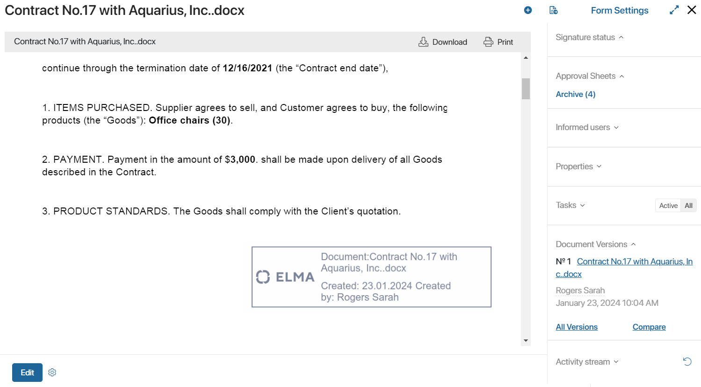
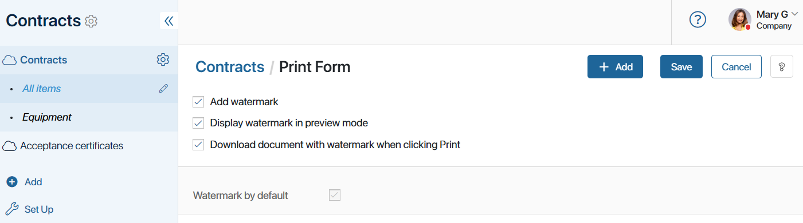
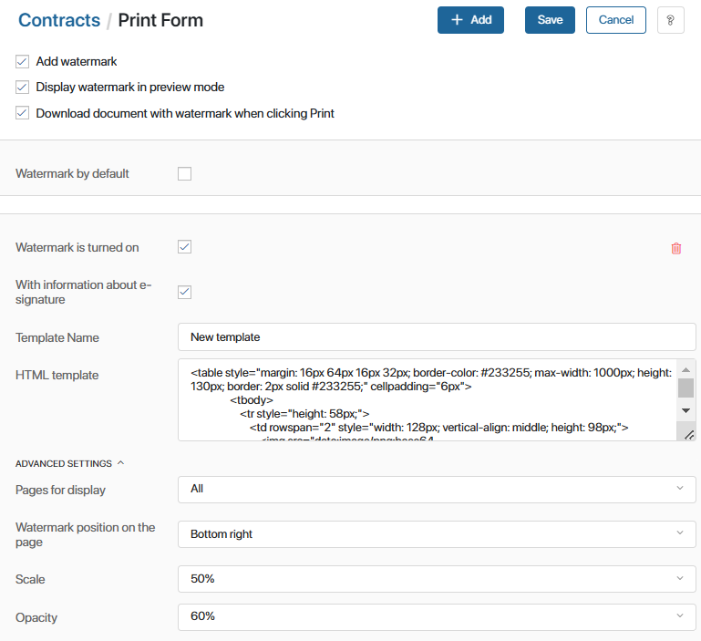

For each system app, the administrator can configure the watermark to be displayed on a document or file. Users will be able to print the document or save it to a local computer.
You can also add the Insert Watermark activity to a business process. This will automatically watermark the file and save it to a variable. The file can then be used during the process, such as sending it for approval or automatically sending it to the customer’s email.
The HTML watermark template is set in the settings of the app or business process activity. You can use multiple watermarks on one document. You can include:
- A ready-made template with the document name, date, and author.
- A template with data on signing the document with an electronic signature certificate.
- A custom template with the necessary information.
Let’s take a closer look at how to enable document printing in the app and configure the watermark template.
Enable watermark printing
- Go to the app settings by clicking on the gear icon next to the app name.
- Select the Print Form option.
- On the opened page, check Add watermark. By default, a preconfigured watermark template is enabled. It contains the document name, date, and author. It will be displayed in the lower right corner of each page of the file. These settings cannot be changed.

- Display watermark in preview mode. The added file is displayed with a watermark on the preview form of the Document type app.
- Download document with watermark when clicking Print. When you click the Print button on the preview form, the file is saved to your local computer with the watermark in the .pdf format.

Add a new watermark template
You can upload a different watermark template for each app. The settings allow you to change the position of the mark, its opacity, select the pages on which it should be displayed, etc.
- Go to the app settings by clicking on the gear icon next to the app name.
- Select the Print Form option.
- Click the +Add button in the upper right corner of the page. Select the type of template:
- Default template. A template with HTML code for the default watermark is created. It contains the document name, date, and author.
- Template with digital signature. A template with HTML code containing data on file signing is added. The watermark displays the organization, signer, name or number of the electronic signature certificate, and its validity period, as well as the date of signing.
- To access the file’s signature data, select the With information about e-signature option. This will insert the electronic signature data into the HTML template and display it in the watermark. If you have selected a template that contains signature information, the option will be activated automatically.

- Specify a name for the template and edit the HTML code. Formatting in the template is done using tags as in a standard HTML document.
Example of the watermark HTML template:
<table style="margin: 16px 64px 16px 32px; border-color: #233255; max-width: 1000px; height: 130px; border: 2px solid #233255;" cellpadding="6px">
<tbody>
<tr style="height: 58px;">
<td rowspan="2" style="width: 128px; vertical-align: middle; height: 98px;">
<td style=" min-width: 350px; max-width: 700px; text-align: left; vertical-align: top; height: 58px;">
<p><span style=" color: #233255; font-size: 22px;">Document: {$__name}</span></p>
<p><span style="color: #233255; font-size: 22px;">{if {$__register_name} <>""} Registration number:{$__register_name}{end}</span></p>
</td>
<td rowspan="2" style="max-width: 130px; vertical-align: middle; height: 98px;"/>
</tr>
<tr style="height: 40px;">
<td style="text-align: left; vertical-align: top; height: 40px;">
<span style="color: #233255; font-size: 22px;"> Created on: {DateTime("DD.MM.YYYY",{$__createdAt})} Created by: {$__createdBy.__name}</span>
</td>
</tr>
</tbody>
</table>
Please note that not all tags, attributes, and CSS properties available for the HTML markup language can be used in the watermark template.
List of available tags, attributes, and CSS properties
Available tags: a, abbr, acronym, address, area, article, aside, b, bdi, big, blockquote, body br, button, caption, center, cite, code, col, colgroup, data, datalist, dd, del, details, dfn, dir, div, dl, dt, em, fieldset, figcaption, figure, font, footer, form, h1, h2, h3, h4, h5, h6, head, header, hr, html, i, img, input, ins, kbd, keygen, label, legend, li, main, map, mark, menu, menuitem, meter, nav, ol, optgroup, option, output, p, pre, progress, q, rp, rt, ruby, s, samp, section, select, small, span, strike, strong, sub, summary, sup, table, tbody, td, textarea, tfoot, th, thead, time, tr, tt, u, ul, var, wbr. Available attributes: abbr, accept-charset, accept, accesskey, action, align, alt, autocomplete, autosave, axis, bgcolor, border, cellpadding, cellspacing, challenge, char, charoff, charset, checked, cite, clear, color, cols, colspan, compact, contenteditable, coords, datetime, dir, disabled, draggable, dropzone, enctype, for, frame, headers, height, high, href, hreflang, hspace, ismap, keytype, label, lang, list, longdesc, low, max, maxlength, media, method, min, multiple, name, nohref, noshade, novalidate, nowrap, open, optimum, pattern, placeholder, prompt, pubdate, radiogroup, readonly, rel, required, rev, reversed, rows, rowspan, rules, scope, selected, shape, size, span, spellcheck, src, start, step, style, summary, tabindex, target, title, type, usemap, valign, value, vspace, width, wrap. Available CSS properties: align-content, align-items, align-self, all, animation, animation-delay, animation-direction, animation-duration, animation-fill-mode, animation-iteration-count, animation-name, animation-play-state, animation-timing-function, backface-visibility, background, background-attachment, background-blend-mode, background-clip, background-color, background-image, background-origin, background-position, background-position-x, background-position-y, background-repeat, background-repeat-x, background-repeat-y, background-size, border, border-bottom, border-bottom-color, border-bottom-left-radius, border-bottom-right-radius, border-bottom-style, border-bottom-width, border-collapse, border-color, border-image, border-image-outset, border-image-repeat, border-image-slice, border-image-source, border-image-width, border-left, border-left-color, border-left-style, border-left-width, border-radius, border-right, border-right-color, border-right-style, border-right-width, border-spacing, border-style, border-top, border-top-color, border-top-left-radius, border-top-right-radius, border-top-style, border-top-width, border-width, bottom, box-decoration-break, box-shadow, box-sizing, break-after, break-before, break-inside, caption-side, caret-color, clear, clip, color, column-count, column-fill, column-gap, column-rule, column-rule-color, column-rule-style, column-rule-width, column-span, column-width, columns, content, counter-increment, counter-reset, cursor, direction, display, empty-cells, filter, flex, flex-basis, flex-direction, flex-flow, flex-grow, flex-shrink, flex-wrap, float, font, font-family, font-feature-settings, font-kerning, font-language-override, font-size, font-size-adjust, font-stretch, font-style, font-synthesis, font-variant, font-variant-alternates, font-variant-caps, font-variant-east-asian, font-variant-ligatures, font-variant-numeric, font-variant-position, font-weight, gap, grid, grid-area, grid-auto-columns, grid-auto-flow, grid-auto-rows, grid-column, grid-column-end, grid-column-gap, grid-column-start, grid-gap, grid-row, grid-row-end, grid-row-gap, grid-row-start, grid-template, grid-template-areas, grid-template-columns, grid-template-rows, hanging-punctuation, height, hyphens, image-rendering, isolation, justify-content, left, letter-spacing, line-break, line-height, list-style, list-style-image, list-style-position, list-style-type, margin, margin-bottom, margin-left, margin-right, margin-top, mask, mask-clip, mask-composite, mask-image, mask-mode, mask-origin, mask-position, mask-repeat, mask-size, mask-type, max-height, max-width, min-height, min-width, mix-blend-mode, object-fit, object-position, opacity, order, orphans, outline, outline-color, outline-offset, outline-style, outline-width, overflow, overflow-wrap, overflow-x, overflow-y, padding, padding-bottom, padding-left, padding-right, padding-top, page-break-after, page-break-before, page-break-inside, perspective, perspective-origin, pointer-events, position, quotes, resize, right, row-gap, scroll-behavior, tab-size, table-layout, text-align, text-align-last, text-combine-upright, text-decoration, text-decoration-color, text-decoration-line, text-decoration-skip, text-decoration-style, text-indent, text-justify, text-orientation, text-overflow, text-shadow, text-transform, text-underline-position, top, transform, transform-origin, transform-style, transition, transition-delay, transition-duration, transition-property, transition-timing-function, unicode-bidi, user-select, vertical-align, visibility, white-space, widows, width, word-break, word-spacing, word-wrap, writing-mode, z-index. |
You can use context variables in the template. They need to look like this: {$variable_name}. The variable name is unique and written in Latin letters, for example, {$counterparty}. In the example above, the document name, registration number, author, and date of creation are substituted into the template.
To display electronic signature data in the HTML template, use {$signInfo.data.parameter_name}. For example, the name of the provider can be added using {$signInfo.data.provider_name}.
- In advanced settings, select on which pages of the document to display the watermark, and set its position, scaling, and opacity.
- You can create an unlimited number of templates. To apply a template to documents in the app, check the Watermark is turned on option in the settings of each template. You can enable several templates at once.
- To delete the watermark template, click on the recycle bin icon.
- Once you have finished configuring, click the Save button in the upper right corner of the page.
The Print button will now appear on the page of the Document type app. It will allow users to open a watermarked document, print it, or save it to their computer.
Configure file printing for a Standard or Event type app
If you have added a property of the Files type in apps of the Standard or Event type, you can configure a print form for the file added to the field. To do this:
- In the app settings, enable the watermark print option and configure the template as described above.
- In the app form settings, switch to the advanced mode and configure the view form in the interface designer:
- If a file added to the field should be shown as a link without displaying its content, add the Buttons: Download and Edit widget.
- To allow users to see the contents of the file added to the property, use the Upload and Preview File widget.
- Each of the widgets contains the Print button that allows users to print the watermarked file or download it to a computer.
- Save and publish the configured form.
For more information on how to work with a print form of the document, refer to the Print form article.
Found a typo? Select it and press Ctrl+Enter to send us feedback